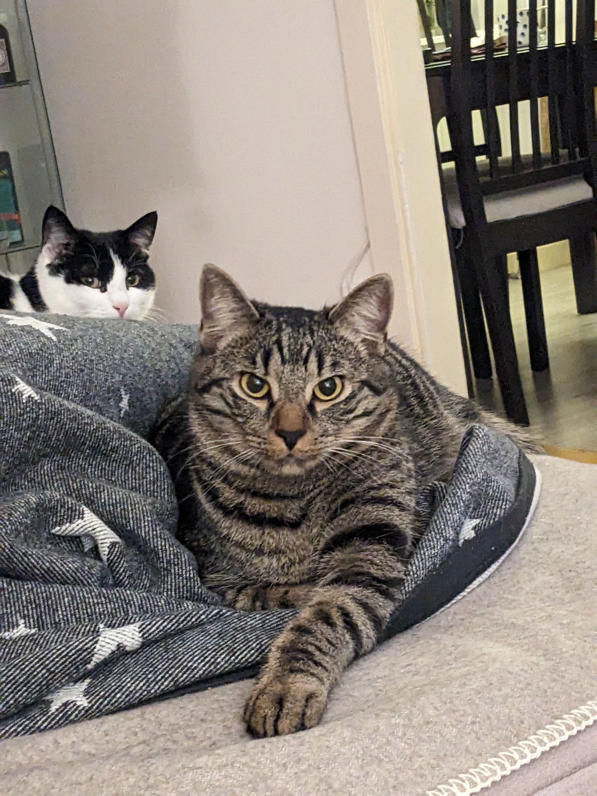

What I’m Doing Now
Update: January 21, 2026

Update: January 21, 2026
Update: 2026-01-21
Update: 2026-01-21
Update: January 08, 2025
- Getting some rock solid Hali furniture from Steyr. Thx Harald and GÜ <3
Update: January 07, 2025
- Laying ethernet cable through my chimney to the basement - I now have WiFi in my workshop lol. Thx so much Huppi <3
Update: January 05, 2025
- Bench grinder mostly done and running awesome. Can now be directly mounted in my vice, which is great
Update: January 04, 2025
- Repainting and finishing some parts of my bench grinder - thx Julian for the paint <3
Update: January 01, 2025
- Doing some final touches on Grandpops vice and balancing my new old bench grinder
Update: December 29, 2025
- Playing around with how to position everything in my workshop - cut down the worktop to snuggly fit the corner
Update: December 27, 2025
- Backboard done and looking awesome!
Update: December 25, 2025
- Got a dart board for christmas and am now building a backboard out of leftovers from my cork floor
Update: December 23, 2025
- Dabbled in woodworking for a christmas present
Update: December 22, 2025
- My new workbench from Küpper Germany arrived! Thx Benji and Gatzi for helping out <3
Update: December 19, 2025
- Second one done too - yay. Also got a steal on a few 18V Bosch hand tools <3
Update: December 15, 2025
- First worktop is done and looking fckin insane
Update: December 14, 2025
- Sanding and sanding and sanding and staining my new worktops. Did I already say I sanded them?
Update: December 12, 2025
- My new solid oak worktops arrived!!! Thx Gatzi for the support <3. Also got a few nice things from Bauhaus - A solid wood worktop and some sawhorses
Update: December 08, 2025
- New lighting prototype done for the workshop - 80 watts of LED strips on some angle bracket ^^
Update: December 07, 2025
- Grandpops vice is alive again! - Jaw screws fixed
Update: December 05, 2025
- Stationary jaw of grandpops vice painted
Update: December 01, 2025
- Went to Vienna and bought 80€ worth of Sardines in the Nuri store :D
Update: November 28, 2025
- Co-worked with Gatzi and supported him finishing his photobox
Update: November 27, 2025
- Got a fat Kappsäge (ELU PS374) for free - Thx Thomsi <3
Update: November 23, 2025
- First coat of paint on the moving jaw of grandpops vice - also my bench drill and other vices are painted too now since I hade leftover paint - RAL 6011 Reseda Grün FTW
Update: November 19, 2025
- Installed a sink in my workshop
Update: November 18, 2025
- Went foraging again and found some Oyster mushrooms, witches boletes and parasols!
Update: November 15, 2025
- Lots of filling and sanding on my grandpops vice
Update: November 10, 2025
- Moved into my workshop!!!
Update: November 6, 2025
- Laid some cork floor in my workshop
Update: November 2, 2025
- Started renovating my grandpas old vice
Update: October 31, 2025
- Found my first large batch of Trompetenpfifferlinge!
Update: October 1, 2025
- Waiting impatiently for my future workshop to finish being renovatet
Update: June 22, 2025
- Hiked from Linz to Mariazell by foot (June 19–22)
Update: June 11, 2025
- Tried to make bubble-free ice cubes by degassing and filtering water – miserably failed
Update: June 8, 2025
- Played 4-player local MTG Commander for the first time with friends
Update: June 6, 2025
Update: June 1, 2025
- Played around with a new desiccant system for my filament storage
Update: May 19, 2025
- Restored Emco Compact 5 steady and follow rests, and a Unimat 3 grinding attachment
- Cut my own hair for the first time
Update: May 14, 2025
- Etched and drilled Muonionalusta meteorite blanks to make jewelry out of
Update: May 12, 2025
- Restored an Emco Compact 5 XY table
Update: May 9, 2025
Update: May 8, 2025
- Got an ear piercing and now have a sick butterfly piercing 🦋
Update: May 4, 2025
- Ran 21 km at Wings for Life World Run
Update: April 30, 2025
Update: April 27, 2025
- Learned how to glass blow 🌬️
Update: April 25, 2025
Update: April 23, 2025
- Created and printed a fascia trigger to successfully get rid of my back pain – see my Printables
- Found my first Speisemorcheln!
Update: April 20, 2025
- Correctly identified tons of new tree and plant species!
Update: April 21, 2025
- Went Eisbaden for the first time
Update: April 19, 2025
- Ate my first cerda (like a lemon, but you eat the white parts)
Update: April 18, 2025
Update: April 16, 2025
- Found my first morel!
- Learned how to identify ash and aspen trees
- Got new passive lighting set up in my kitchen
Update: April 14, 2025
- Setting up my Rpi4 again - somehow forgot the portainer PW again ._.
- Printing new keycaps for an old keyboard, since I sold some ^^
- Running a half marathon
Update: April 11, 2025
- Adding Spotbroo to Software Projects
- Personal pictures in Portfolio and /now
Update: April 10, 2025
- Designing and printing a holder for my GFs kerastase hair oil
- Debugging a defective 48 V Gardena battery
Update: April 9, 2025
- Sending push notifications from an ESP8266 to my phone while on the go - used to confirm if my cat has been automatically fed
Update: April 6, 2025
- Trying to add an icon to the preview and the website favicon
- Playing around with html previes, when sending links
- Completely broke my website while learning about github commands and how branches work.
- Asked ChatGPT what to do with my domain and /now we're here :D
- URL redirects on Cloudflare directing to my favorite playlist at playlist.protofox.at
- Onboarded protofox.at on Cloudflare – great user flow, nice mobile experience, and great functionality (how the hell is this free? <3)
This is a now page, inspired by Derek Sivers. It's a snapshot of what I'm focused on at the moment.
Email Me
And this is me

Also, here are the two fluffballs chilling together:
